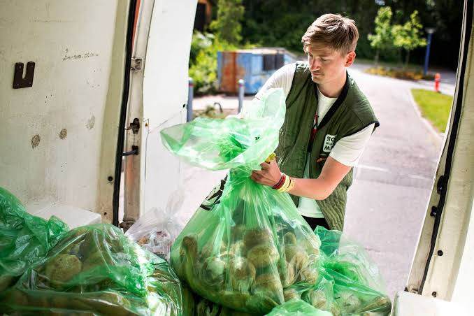

Vi er en organisation, der arbejder for at gøre det nemmere at undgå madspild.
Vi informerer, inspirerer og skaber løsninger, der hjælper forbrugere,
virksomheder og organisationer med at bruge vores mad bedre.


Vi er en organisation, der arbejder for at gøre det nemmere at undgå madspild.
Vi informerer, inspirerer og skaber løsninger, der hjælper forbrugere,
virksomheder og organisationer med at bruge vores mad bedre.

Danmark mod Madspild arbejder for at skabe større opmærksomhed omkring madspild i Danmark.
Vi ønsker at gøre det lettere for mennesker, virksomheder og organisationer at forstå
problemet med madspild og finde løsninger, der kan være med til at mindske omfanget af mad, der bliver smidt ud.
Vores fokus er på information, inspiration og konkrete muligheder for at gøre en forskel i hverdagen.
Danmark mod madspild hjælper blandt andet virksomheder med at mindske deres madspild ved først at måle,
hvor meget mad de smider ud. Derefter undersøger vi, hvor spildet opstår, og hvorfor det sker.
Det kan for eksempel være for meget produktion, for stor indkøb eller mad, der ikke bliver solgt.
Sammen finder vi konkrete løsninger, som passer til virksomhedens hverdag.
På den måde kan virksomhederne ændre deres rutiner og reducere mængden af mad, der går til spilde.
Det handler nemlig ikke kun om at måle madspild, men også om at finde årsagen til det.